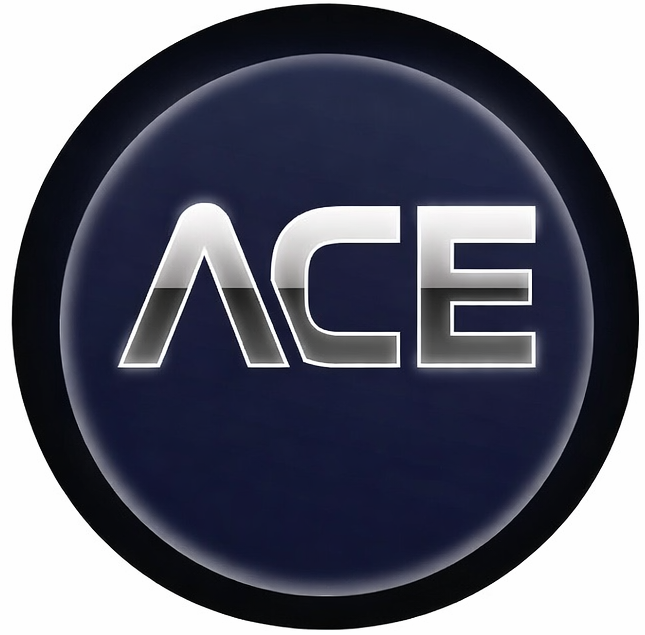

Custodian of the ACE Protocol
ACE Foundation operates under three core principles: Ontology, Integrity and Stewardship. Ontology ensures a precise and transparent conceptual structure for the ACE protocol. Integrity safeguards the neutrality, correctness and independence of the framework. Stewardship reflects the Foundation’s role as a long‑term, non‑commercial custodian of the protocol and its public specification.
ACE Foundation develops transparent, evidence‑based methodologies for CO₂e accounting, governance logic and institutional decision‑making. Our work focuses on clarity, reproducibility and auditability — enabling organisations to build climate strategies grounded in verifiable data and robust governance structures.
Email: info@acefoundation.net
ACE-Protocol
ACE-Foundation
ACE-Renaissance
Analysis 1
Regenerative Implementation